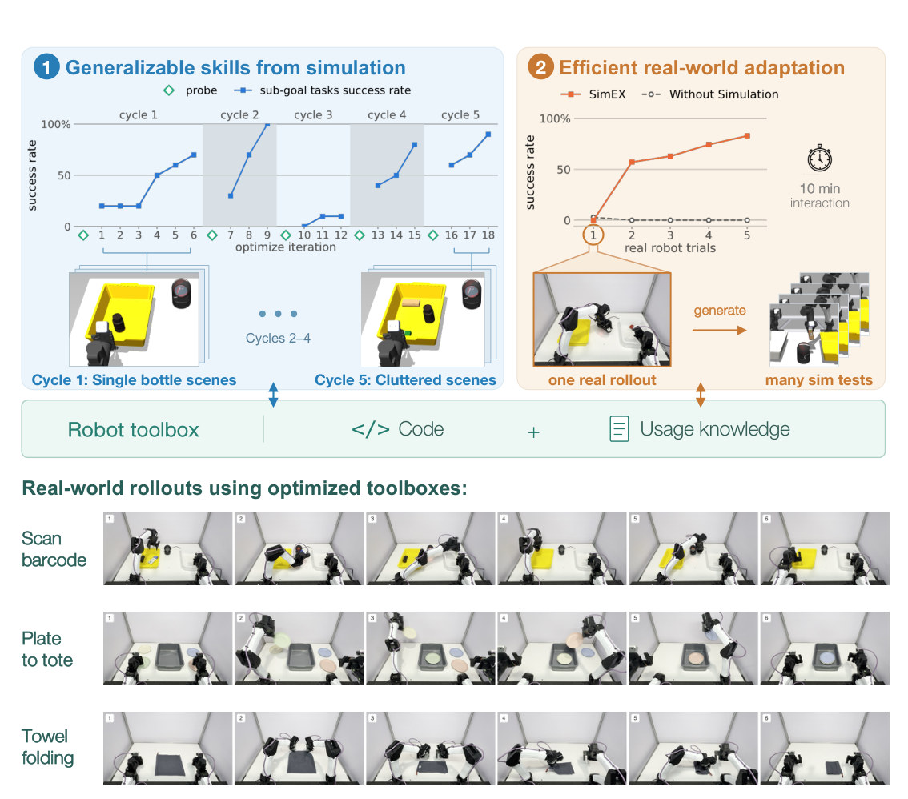
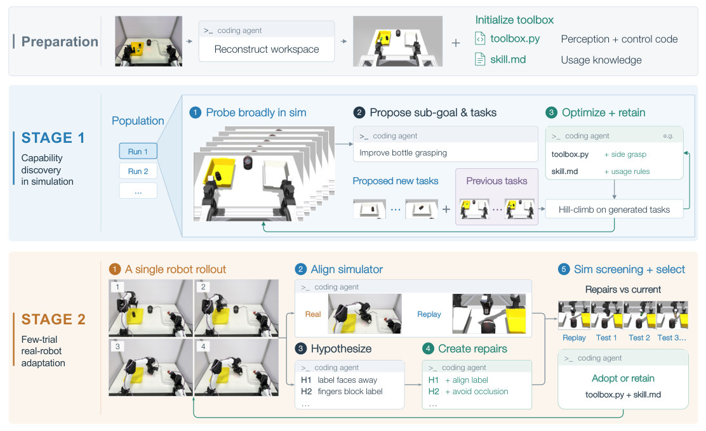
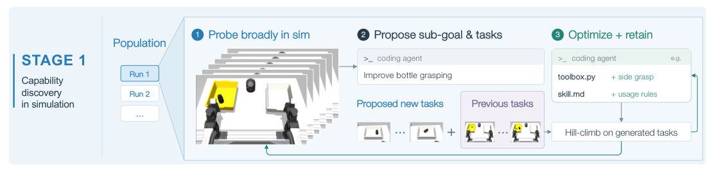
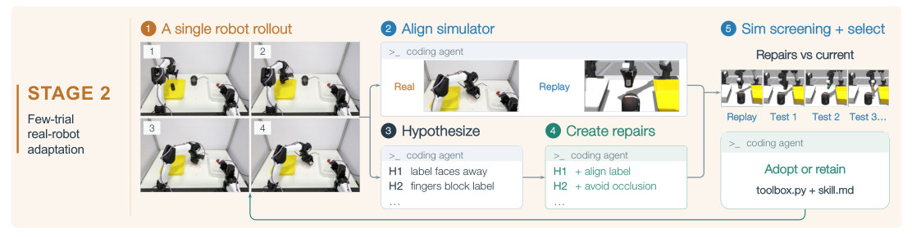
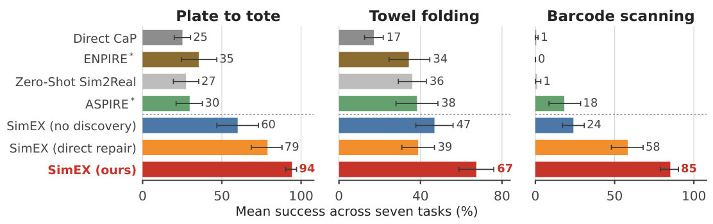
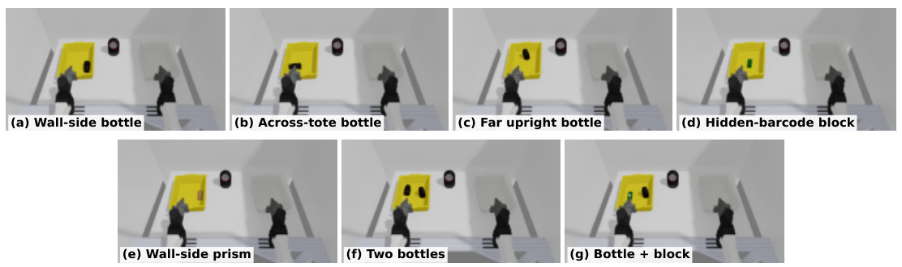
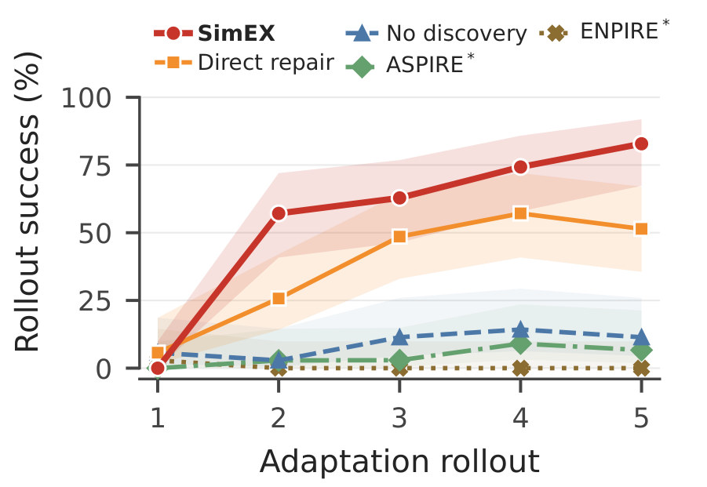
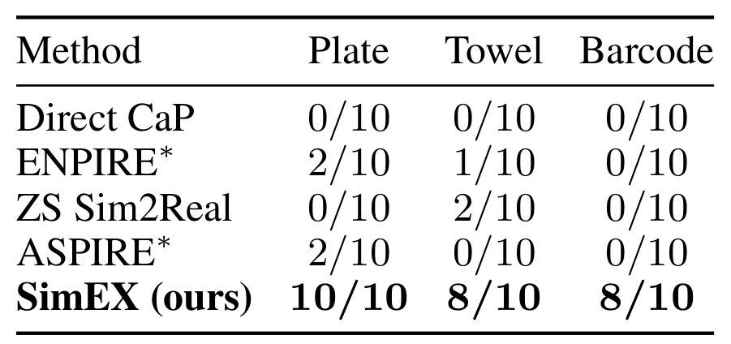
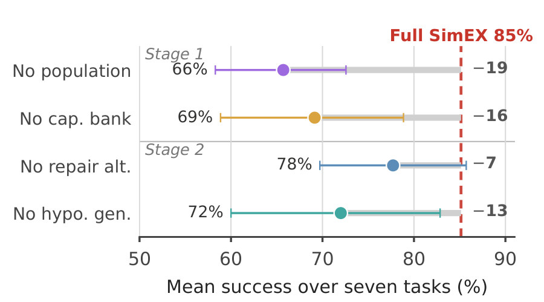
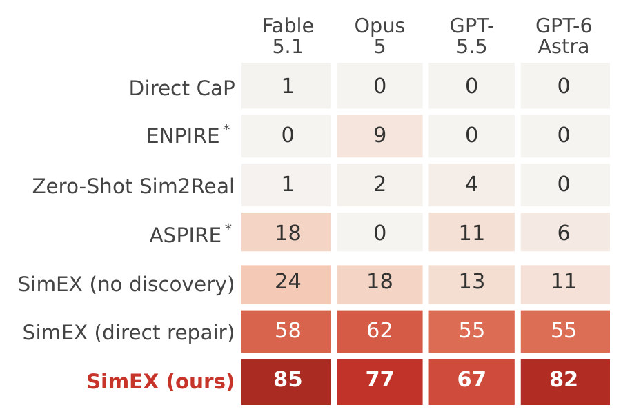

Agent-centric-real-to-sim · 归档于 2026-11-16
SimEX
SimEX: Simulation-Integrated Robotics AutoResearch
arXivPDF Project page 没有 code 仓库（项目页只在弹窗里展示 toolbox 和 CaP 脚本）
归档到 Agent-centric real-to-sim：agent 先从一张照片搭出粗糙的 sim，之后每次真机 trial 都用来校正这个 sim，再用它诊断失败、筛选修复；sim 是 coding agent 的实验室。也贴近 Robotic harness（coding agent 写 CaP 控制真机）。
TL;DR
- Problem
- coding agent 直接写机器人代码，只能猜标定误差、可达抓取这类物理量（Direct CaP 真机 0/30）；在真机上反复试错又贵又不安全，5 次 trial 改不出来（ENPIRE* 真机 3/30）。
- Idea
- 把 simulator 当"大致正确的实验室"：Stage 1 在 sim 里自己出题、自己写成功判据，练出
toolbox.py+skill.md；Stage 2 每次真机 trial 后先用 replay 校正 sim，再在校正后的 sim 里比较 4 个候选 repair，由 agent 决定用哪个。 - Result
- 物理真机：每任务 5 次适配 trial（约 10 分钟）后 26/30，最强 baseline 3/30（Table 1）。sim-to-sim：barcode 平均 85%，外部 baseline 最高 18%（Fig. 3）。
Problem
coding agent 上真机：一次写对靠猜，真机上试错又太贵
Running example · 后面每个 stage 都跟着它走
Barcode scanning（扫码入库）：dual-arm YAM，1 个顶视 + 2 个腕部相机。机器人要在 source tote 里找到物体、抓稳、把条码面对准固定的 reader（工作窗口很窄）、读到之后才能放进 drop-off tote（附录 B.3）。给 agent 的只有 一张工作台照片 + 物体描述、固定的低层 robot API（只给 raw RGBD，没有 task-level skill）、0 条示范、5 次真机 trial ≈ 10 min。
→ 想要：一套 toolbox.py + skill.md，让 LLM 一次写出的 CaP 脚本完成真机任务 扫描两个物体的条码并都放进 drop-off tote（§3.3、Table 1 的 barcode 列）。sim-to-sim 实验里这个任务族另有 7 个评测任务（Fig. 10）。
flowchart LR IN["例子输入
照片 + 两物体扫码
0 示范 · 5 次 trial"] IN --> A1["Direct CaP
初始 toolbox
一次写出脚本"] A1 --> AX["靠猜标定、可达抓取
达不到物理容差
真机 0/10
sim-to-sim 1%"]:::gap IN --> B1["ENPIRE*
只用真机 rollout
反复改代码"] B1 --> BX["每次只能试一个改动
5 次 trial 改不出来
真机 0/10
sim-to-sim 0%"]:::gap IN --> C1["Zero-Shot Sim2Real
只在 sim 里优化
直接部署"] C1 --> CX["sim 与真机有差距
toolbox 直接失效
真机 0/10
sim-to-sim 1%"]:::gap IN --> D1["ASPIRE*
sim 里建文本 skill 库
部署时直接修"] D1 --> DX["修补不回 sim 验证
（推断）
真机 0/10
sim-to-sim 18%"]:::gap
数字：真机 = Table 1 的 barcode 列（两物体任务，10 次评测）；sim-to-sim = Fig. 3 barcode 7 个任务的平均成功率（Isaac Sim 当"真机"）。"坏在哪"：Direct CaP 依据 §1（LLM 只能猜相机标定误差、可达抓取等量，达不到物理任务的容差）；ENPIRE* 依据 §1（真机试错贵、不安全，rollout 噪声会误导修改）和 Fig. 4（ENPIRE* 5 次 rollout 都贴着 0 线）；Zero-Shot Sim2Real 用的就是 SimEX 的 Stage 1，§3.2 说这个 toolbox 第一次部署时接近 0%，不能直接迁移；ASPIRE* 一行是推断：附录 C 只说它在 sim 里建文本 skill library、部署时修补，§4 说 SimEX 和这些工作的不同在于真机 trial 之间回到 sim 诊断和筛选，论文没有单独分析 ASPIRE* 坏在哪一步。
根本问题：操作需要的物理量（标定误差、可达抓取、条码面朝向）LLM 不知道，只能靠实验得到；真机实验贵，sim 实验便宜但不准。 这篇的切入点：把 sim 当"大致正确的实验室"：大量实验在 sim 里做，真机 trial 只用来校正 sim、挑选修复；迁移的是代码和测得的极限，不是一个 policy。
Related work
| 相关工作 | 解决什么 | 怎么解决 | 和本文的区别 |
|---|---|---|---|
| 同一问题 · 别的解法 | |||
| Physical autoresearch ENPIRE*（agentic optimization，本文所属的一类） | coding agent 从真机反馈里自我改进 policy | 真机上 reset–execute–verify–refine，靠自动 reset、成功判定、安全监控撑住 | 缺 sim：每个改动都要花一次真机 trial → SimEX 把大部分实验放进 sim，真机只 5 次，每次都变成一批 sim 测试 |
| Sim 里的 skill library + 部署时修补 ASPIRE*（同属 agentic optimization） | agent 自己发现机器人 skills | 在 sim 里建文本 skill library，部署时据反馈修补 | 有 sim，但真机 trial 之间不回 sim → SimEX 每次 trial 后先校正 sim，再在 sim 里比较 4 个候选 repair |
| Code as Policies / LLM 控制机器人 CaP、ProgPrompt、Inner Monologue、VoxPoser、CaP-X | 语言指令 → 可执行的机器人程序 | LLM 一次写出代码，调用人给好的感知、规划、操作 primitives | 假定 primitives 和反馈接口已经给好 → SimEX 让 agent 做实验，自己造出并标定这些 primitives（toolbox） |
| Sim-to-real transfer Domain randomization、DrEureka（= Zero-Shot Sim2Real）、RMA、SLAC、Chebotar 2019 | sim 里学的 policy 到真机掉点 | 随机化 sim 参数、LLM 设计 reward 和随机化；或 sim 预训练 + 少量真机适应 | 迁移的是神经网络 policy，要靠 sim 够准或随机化够广 → SimEX 迁移代码和测得的极限，sim 只需定性正确 |
| 相似做法 · 别的问题 | |||
| Real-to-sim-to-real · 生成式 sim RialTo、ACDC、RoboGen、GenSim、UED | 自动造 sim 场景、任务和课程来训练 policy | 高保真重建一个场景、训一个 policy；或用 foundation model 生成场景、任务、reward | 生成的内容用来训 policy → SimEX 在目标工作台的 sim 里自出任务 + success predicate，用来压测一个代码 toolbox |
来源：§1 引言、§4 和附录 E 的 Related Work、附录 C 的 baseline 说明。带星号的 baseline 是作者按统一接口和预算重写的版本；Zero-Shot Sim2Real 按 DrEureka 的原则、用 SimEX 的 Stage 1 实现。RialTo、ACDC 在 library 里有页面，论文只在文字上和它们区分（§1、附录 E），没有数字。未另行检索。
Level 1 · Big picture
sim 是实验室：先在 sim 里练出 toolbox，再用 5 次真机 trial 校正 sim、在 sim 里挑修复

怎么读这张图
- ① Generalizable skills from simulation（左上）：barcode 任务族的一次 Stage 1。绿色菱形 = probe（广泛探测、换新弱点），蓝线 = 当前 sub-goal 任务的成功率。cycle 1（Single bottle scenes）在 iteration 1–6 从 20% 升到 70%；每换一个 sub-goal 成功率先回落再爬升；到 cycle 5（Cluttered scenes）是 60% → 90%（各点数值项目页 Simulation 部分有标注）。
- ② Efficient real-world adaptation（右上）：Stage 2 的 5 次 trial。橙线 SimEX 一路上升（项目页标注 0 → 57 → 63 → 74 → 83%），灰虚线 Without Simulation 贴着 0 线；下面一次 "one real rollout" 经 generate 变成 "many sim tests"。注意：横轴写的是 real robot trials，但这条线和 Fig. 4（sim-to-sim，Isaac Sim 当"真机"）的 SimEX 曲线相同，项目页也把它标为 stand-in robot；物理真机只报告了最后的 10 次评测（Table 1）。
- Robot toolbox（中间绿条）：
</> Code（toolbox.py）+ Usage knowledge（skill.md）。两个阶段都只改这一样东西，上下的双向箭头就是在读写它。 - Real-world rollouts（底部三行）：三个任务族的真机帧；第一行 Scan barcode 就是 running example，每一行都是一次生成的脚本在跑。
flowchart TD I["输入
工作台照片 + 任务描述"] --> S1["Stage 1 · sim 实验室
4 runs × 20 iterations
单瓶 → 杂乱场景"] S1 --> S2["Stage 2 · 5 次真机 trial
每次：校正 sim
再在 sim 里筛 4 个 repair"]:::win S2 --> O["输出
toolbox.py + skill.md
真机 barcode 8/10"]
Level 2 · Stages
5 步：Preparation、论文 Stage 1，论文 Stage 2 拆成「校正 sim」和「在 sim 里筛 repair」，最后部署

怎么读这张图
- Preparation（灰）：真机照片 → "coding agent: Reconstruct workspace" → sim 里的同一工作台；"+ Initialize toolbox"：toolbox.py（Perception + control code）和 skill.md（Usage knowledge）。→ Step 1
- STAGE 1（蓝）：Population 里的 Run 1、Run 2… 各自循环：① Probe broadly in sim → ② Propose sub-goal & tasks（例 "Improve bottle grasping"；Proposed new tasks + 紫框 Previous tasks）→ ③ Optimize + retain（toolbox.py "+ side grasp"、skill.md "+ usage rules"，Hill-climb on generated tasks），绿箭头回到 ①。→ Step 2
- STAGE 2（橙）① ②：A single robot rollout（4 帧真机）→ Align simulator：Real 和 Replay 两帧对照。→ Step 3
- STAGE 2 ③ ④ ⑤：Hypothesize（H1 label faces away、H2 fingers block label）→ Create repairs（H1 + align label、H2 + avoid occlusion）→ Sim screening + select（Repairs vs current：Replay、Test 1、Test 2、Test 3…）→ Adopt or retain toolbox.py + skill.md，长箭头回到 ①。② 和 ③ 都从 ① 分出：校正 sim 和提假设同时进行（§2.4）。→ Step 4
flowchart TD S1["1 · Preparation
照片 → MuJoCo 工作台"] --> S2["2 · 论文 Stage 1
sim 里开放式探索
单瓶 → 杂乱场景"] S2 --> S3["3 · 论文 Stage 2a
每次真机 trial 校正 sim
同一脚本在 sim 里 replay"]:::win S3 --> S4["4 · 论文 Stage 2b
用校正后的 sim
诊断、筛 repair
4 个候选 + 当前版本"]:::win S4 -.->|"下一次 trial，共 5 次"| S3 S4 --> S5["5 · 部署：一次写出 CaP
真机 barcode 8/10"] click S1 href "#stage-1" click S2 href "#stage-2" click S3 href "#stage-3" click S4 href "#stage-4" click S5 href "#stage-5"
点击 stage 展开 Level 3 细节。贯穿所有步骤的 toolbox 和 CaP 接口见 Toolbox 接口。
Level 3 · Details
每个 stage 的细节
Step 1 Preparation：从一张照片搭出 sim sandbox 工作台照片 + 物体描述 → sandbox + toolbox.py v0 + skill.md v0
- Why：后面的 autoresearch 需要一个能跑的近似工作台；目标是 executable approximation，不是精确标定或照片级的 digital twin（§2.2）。
- How：给一个 frontier coding agent：空的 YAM station 场景模板、预定义的 3D mesh 库、一张工作台照片、物体的自然语言描述；目标平台如 mjlab。
- agent 自己挑资产、配置场景（§2.2）；论文说也可以换成现成的 real-to-sim 系统，如 SimFoundry、VIGA。
- 产出三样：simulator（机器人 + 工作台几何）、初始 toolbox.py（基于输入图像的初始 perception 模块）、初始 skill.md（描述固定的 robot API）。
- 所有基于 sim 的方法（包括 baseline）都从同一个 sandbox 和初始 toolbox 出发（附录 C）。
- 论文没报告：重建用时、重建误差、物理参数从哪来。
flowchart LR a["输入
1 张照片 + 物体描述"] --> b["coding agent
挑 mesh、配场景
YAM 模板 + mesh 库"] b --> c["输出
sim sandbox
toolbox.py v0
skill.md v0"]
Running example 在这一步
Fig. 2 Preparation：左边是真机工作台（黄色 source tote、瓶子、scanner、右侧 drop-off tote），右边是 agent 搭出的 sim 场景。sim-to-sim 实验里 barcode 的 sandbox 是 MuJoCo，评测用的"真机"是 Isaac Sim（§3.2）。
Step 2 论文 Stage 1：sim 里的开放式能力探索 sandbox + toolbox v0 → 覆盖很多任务变化的 toolbox
- Why：只在重建的 sim 里优化目标任务，toolbox 会 overfit 这个 sim 特有的几何和动力学，搬不到真机（§2.3）。所以先不盯目标任务，自己出题找弱点、修弱点。
- ① Probe：agent 自己生成任务和环境变化（目标、物体类别、物体物理属性如 mass 和 friction、摆放、机器人初始位形），每个配置配一个基于 sim state 的可执行 success predicate；每 iteration 24–32 个 probe 配置（Table 2）。没有人给的评价指标。
- ② Sub-goal：从成败对比里挑一个系统性弱点作 sub-goal，固定约 10 个 focused 配置当训练集（Table 2）。
- ③ Hill-climb：改 toolbox.py、skill.md 或两者，在 focused 任务上反复做 sim 实验爬坡；每个候选另跑 4–6 个 capability-bank replay 配置，防止把旧能力改坏（Table 2）。然后重新 probe，开始下一个 cycle。
- Population：4 个独立 member，各有自己的 worktree、toolbox、任务集和 capability bank，各跑 20 个 optimization iteration；在 probe 边界可以读别的 member 的实验简述，可以重新实现想法，但不能拷代码（§2.3、Table 2）。
- 成本（barcode 平均，每个 member）：840 次 orchestrator 调用、5.4 h agent thinking time、1.98M output tokens（其中 reasoning 1.16M）、155M cache-read input tokens（Table 3）；reasoning effort = max。
- 证据（sim-to-sim）：去掉 population 85 → 66%，去掉 capability bank 85 → 69%（Fig. 5，barcode）；把整个 Stage 1 换成固定目标的 autoresearch（no discovery），plate 94 → 60、towel 67 → 47、barcode 85 → 24（Fig. 3）。

怎么读这张图
- Population：Run 1、Run 2、… 是并行的 member；从 Run 1 伸出的两条斜线把它放大成右边的循环，每个 run 内部都这样跑。
- ① Probe broadly in sim：一叠不同的 sim 场景，就是 agent 自出的 probe 配置。
- ② Propose sub-goal & tasks：coding agent 定下 sub-goal "Improve bottle grasping"；蓝字 Proposed new tasks 是新出的 focused 任务，紫框 Previous tasks 是 capability bank 里已解决的旧任务。
- ③ Optimize + retain：例子里 toolbox.py 加了 side grasp，skill.md 加了 usage rules；下面 Hill-climb on generated tasks 在新旧任务上一起爬坡，绿箭头回到 ①。
flowchart TD P["① Probe
24–32 个自出配置
各带 success predicate"] --> G["② Sub-goal
例：top-down bottle
约 10 个 focused 配置"] G --> H["③ Hill-climb
focused 任务
+ 4–6 个 bank replay"] H -.->|"保留改进，再 probe"| P H --> O["每个 member
20 iterations · 共 4 个"]
Running example 在这一步
barcode 的一次 Stage 1（曲线就是 Fig. 1 左上；sub-goal 名、probe 分数和每个 iteration 的成功率是项目页 Simulation 部分标注的数值）：
- probe 1：新任务上 25% → sub-goal top-down bottle，iteration 1–6 从 20% 到 70%。
- probe 2：57% → label-down prism，30% → 100%；probe 3：43% → label-down hex，0% → 10%；probe 4：46% → label-up prism，40% → 80%。
- probe 5：39% → lying bottle，60% → 90%；probe 6：56% → 2-object clutter，iteration 19、20 都是 80%。
- Fig. 1 只画到 iteration 18，并把 cycle 5 标成 Cluttered scenes；项目页把 cycle 5 写成 lying bottle，2-object clutter 是 cycle 6。
Step 3 论文 Stage 2a：每次真机 trial 都校正 simulator 当前 toolbox + 任务 → 1 次真机结果 + 全量记录 + 校正后的 sim（一直保留）
- Why：Stage 1 的 toolbox 不能直接迁移：barcode 上第 1 次部署时成功率接近 0（§3.2、Fig. 4，sim-to-sim）。要在 sim 里判断哪个修复有用，sim 得先能重演刚才在机器人上发生的事。
- ① Robot rollout：policy-writing model 用和 Stage 1 相同的 prompt（附录 A.2），按当前 toolbox 写一个脚本，在机器人上只执行一次。每 iteration 1 次 rollout，每次适配共 5 次（Table 2）；真机上 5 次 ≈ 10 min，trial 之间人工 reset（§3.3）。
- 记录：相机视频、policy 读过的每一帧图像、完整的 policy transcript（执行中打印的 perception 和 motion 信息）。
- ② Replay：rollout 一打完分，harness 就在 sim 里用同一个 task configuration 重放"已执行的 policy"，脚本固定不变。
- 比对：coding agent 定性比较真机和 sim 的记录，自己判断 sim 有没有重现"与这次结果相关的行为"。
- 校正：没重现，就继续改 simulator、再跑同一个 fixed-policy replay，直到重现。
- 保留：这些修改一直保留，用在之后所有 screening rollout 上（§2.4）；下一次 trial 在已校正的 sim 上继续校正。
到底改了 sim 的什么
- 论文没有列出。§2.4 只写 "updates the simulator"：没有参数或模型清单、没有校正前后的例子、没有校正轮数；"重现"也没有定量标准，由 agent 判断。
- 能确定的：改的是 sim，不是 toolbox；标准是同一脚本的 replay 重现真机结果（Fig. 2 ② 的 Real / Replay 对照）；修改跨 iteration 累积。
- 推断（论文未说）：sim 由代码定义（§1），能改的范围应是 Preparation 时 agent 配置的场景和资产，以及 Stage 1 probe 时已经在改的物体属性（mass、friction、摆放、初始位形，§2.3）。
- sim-to-sim 里要追的差距：两个 simulator 的物理实现、接触求解器、资产、渲染管线和系统参数都不同；agent 看不到评测 sim 的状态和源码（§3.2）。
- 没有单独的消融：direct repair 同时去掉了 replay、假设生成和候选筛选（附录 C），所以校正这一步单独值多少，论文没测。
- 项目页旁证（towel）：sandbox（FLASH）有 fake grasping、fake arms、没有相机渲染，"a handful of real trials in Stage 2 corrected what the sandbox got wrong"；同样没说改了什么。
flowchart TD T["① 真机 rollout
脚本只执行 1 次"] --> L["记录
视频 · 帧 · transcript"] L --> P["② Fixed-policy replay
同一脚本 · 同一配置"] P --> C["Agent 定性比对
结果相关的行为重现了？"] C -->|"没有"| U["改 simulator
改什么：论文未报告"] U -.->|"再 replay"| P C -->|"重现了"| K["修改保留
之后的 screening 都用"]:::win

怎么读这张图
- ① A single robot rollout：4 帧真机：画面左边的手臂伸进黄色 tote 抓瓶子（1–2），再把瓶子举到 scanner 前（3–4）。
- ② Align simulator：左边 Real：真机上瓶子被举在 scanner 前；右边 Replay：同一脚本在 sim 里重放到同一时刻的渲染（相机视角不同）。agent 对照两边，决定要不要改 sim。
- ② 的出口：箭头连到 ⑤ Sim screening：screening 用的是校正后的 sim。
Running example 在这一步
Fig. 2 的 barcode 这一轮：真机 rollout 把瓶子抓起送向 scanner；Align simulator 把同一脚本在 sim 里重放到同一时刻对照。图没说这次 replay 要不要改 sim、改了什么。sim-to-sim 的 barcode 实验里，"真机"是 Isaac Sim，被校正的是 MuJoCo sandbox。
Step 4 论文 Stage 2b：在校正后的 sim 里诊断、筛 repair 记录 + 校正后的 sim + 当前 toolbox → 下一次 trial 用的 toolbox
- Why：一次 rollout 说明发生了什么，但"该改什么"可以有好几种解释；与其把下一次真机 trial 花在第一个看似合理的改动上，不如先在 sim 里比几个修法（§2.4）。
- ③ Hypothesize（和 Step 3 同时）：agent 从记录里提出具体假设，每个假设指出 toolbox 的一个局限，并预言一个可观察的改进。
- ④ Create repairs：复制当前 toolbox，每份实现一个不同的 repair；每 iteration 4 个候选（Table 2）。
- ⑤ Screening，每个候选和当前 toolbox 都在校正后的 sim 里跑两种测试：
- Replay：从重建的 trial 状态重放刚才真机执行的脚本（脚本固定、只换 toolbox）→ 这个修复对这次的失败起作用吗？这就是诊断：哪个假设预言的改进真的出现了。
- Test tasks：agent 写的 5 个 sim 测试场景（Table 2），专门拉开候选之间的差别，检查局部修复能否推广到这次失败之外。
- Select：screening 不排名，也没有自动选择规则；agent 拿到视频、trace 和分数，结合 sim 和机器人之间剩下的差别，判断每个测试有多可信，选一个 repair 或保留当前 toolbox。
- 选中的 toolbox 用于下一次真机 rollout（回到 Step 3）；5 次后冻结，拿去评测。
- 每 iteration 的 sim 测试 = (4 个候选 + 当前版本) × (1 次 replay + 5 个测试场景)；每个场景跑几次论文没写。
- 成本（barcode 平均，每次适配 run）：124 次 orchestrator 调用、31 min agent thinking time、161k output tokens（其中 reasoning 64k）、19.5M cache-read input tokens（Table 3）；reasoning effort = medium。
论文的数字（都是 sim-to-sim）
- Fig. 4（barcode）：SimEX 和 direct repair（同一个 Stage 1 toolbox，但不 replay、不提假设、不筛选）第 1 次都接近 0；一次 rollout 加一次修复后两者都大幅提升，sim 辅助让这次提升翻了一倍多，差距一直保持到第 5 次（§3.2）。项目页标注 SimEX 这条线为 0 → 57 → 63 → 74 → 83%；direct repair 的逐次数值论文和项目页都没印出来。
- Fig. 5（barcode）：每 iteration 只提 1 个 repair，85 → 78%（−7）；不先写假设、直接从证据写 repair，85 → 72%（−13）。
- Fig. 3：去掉 Stage 2 里所有 sim 辅助（direct repair），plate 94 → 79、towel 67 → 39、barcode 85 → 58。
怎么读这张图
- ③ Hypothesize：coding agent 写出 H1 label faces away（条码面朝外）、H2 fingers block label（手指挡住条码），"…" 表示还有别的。
- ④ Create repairs：每个假设一个修复：H1 + align label（把条码面转正），H2 + avoid occlusion（避开遮挡）。
- ⑤ Sim screening + select：上排 "Repairs vs current" 缩略图：Replay（重放真机脚本），Test 1、Test 2、Test 3…（agent 写的测试场景）；下面 coding agent "Adopt or retain toolbox.py + skill.md"，长箭头回到 ①。
flowchart TD E["真机记录
Fig. 2 的瓶子 rollout"] --> H["③ Hypothesize
H1 label faces away
H2 fingers block label"] H --> R["④ 4 个候选 repair
H1 + align label
H2 + avoid occlusion"] R --> S["⑤ Screening
4 候选 + 当前 toolbox
replay + 5 个测试场景"] K["Step 3 校正后的 sim"]:::win --> S S --> J["Agent 判断可信度
不排名、无自动规则"] J --> A["Adopt 或 retain
用于下一次真机 trial"]
Running example 在这一步
Fig. 2 这一轮给了两种解释（条码面朝外 / 手指挡住条码），各变成一个修复，和当前 toolbox 一起在校正后的 sim 里重放同一脚本、再跑测试场景，agent 看结果决定采纳哪个或都不要；图没说最后选了哪个。整个 barcode 任务族 5 次 trial 之后：sim-to-sim 平均 85%（Fig. 3），真机两物体任务 8/10（Table 1）。
Step 5 部署：冻结的 toolbox → 一次写出 CaP 脚本 toolbox + 任务描述 → 一个 Python 脚本，直接在机器人上跑
- Why：把 coding agent 的推理放在执行之前，执行中不再调用模型（§3.4）。
- How：每个任务新开一次 LLM 调用，prompt = 当前 skill.md + toolbox.py 源码 + 任务名和描述 + 固定输出格式（≤ 200 词的 plan + 完整 Python 脚本）（附录 A.2）。
- 纯文本调用：不许用工具、只能一轮，违反就作废这次 trial、不重试；唯一的硬规则是不许读写 privileged object state。
- SimEX、所有 baseline、每一次评测 trial 都用这同一个 prompt。
- 一次调用约 30 s（附录 A.3）；任务接口不变时，同一个程序可以用于不同的初始状态（附录 D.4）。
flowchart LR a["Prompt
skill.md + toolbox.py
+ 任务描述"] --> b["1 次 LLM 调用
约 30 s · 无工具"] b --> c["CaP 脚本
执行中不调模型"]
Running example 在这一步
项目页（Toolbox and CaP script）给出两物体 barcode 的脚本：共 79 行（展示其中 41 行）。流程是 find_objects → grasp_object → present_to_scanner；没读到就 regrasp_rotated 再试，仍失败就放回 source tote；place_in_tote 在没有新读数时拒绝放下。它调用的 toolbox.py 有 6887 行，用到其中 10 个 primitives。
贯穿所有步骤 Toolbox 接口：唯一跨 iteration 保留的东西 固定 robot API → 可改的 toolbox.py + skill.md → 用完即丢的 CaP 程序
- 两个文件成对修改：toolbox.py 放 perception 和 control primitives，skill.md 写怎么用，包括测得的极限和已知的失败模式（§2.1）。
- 程序用完即丢：每次生成的 CaP 程序执行完就丢，知识只能靠 toolbox 的更新传到下一轮，所以 toolbox 存的是与具体任务无关的能力（§2.1）。
- 边界：toolbox 建在固定的低层 robot API 上；感知只有 raw RGBD，没有 privileged scene state；API 给关节和末端 proprioception、IK 和可达性查询、Cartesian 末端或绝对关节目标、夹爪命令，没有预定义的 task-level 操作技能（§2.1）。
- Autoresearch loop：每个 stage 开一个 coding-agent 会话，program.md 写明目标、规则、一次 iteration 的步骤和可用的 harness 命令；harness 只执行和打分，所有优化决定都由 agent 做；iteration 预算用完就停（§2.1）。
- LLM + toolbox 合起来可以看作一个 multi-task policy：自然语言任务 → visuomotor 程序（§2.1）。
flowchart LR A["固定 robot API
raw RGBD · IK · 夹爪"] --> T["Toolbox（可改）
toolbox.py + skill.md"]:::win T --> C["CaP 程序
执行后丢弃"]
Running example 在这一步
Fig. 2 的 Stage 1 例子一次改了两处：toolbox.py + side grasp，skill.md + usage rules；Stage 2 的 "Adopt or retain" 采纳的也是这一对文件。
Recap：例子覆盖了论文的哪些 idea
| 论文里的 idea | 例子里在哪体现 |
|---|---|
| 从一张照片自动搭 sandbox | Step 1：barcode 工作台照片 → MuJoCo 场景 + toolbox v0 |
| 开放式 probe + 自写 success predicate | Step 2：probe 1 在新任务上 25%，挑出 top-down bottle |
| sub-goal 爬坡，成对改 toolbox.py 和 skill.md | Step 2：Improve bottle grasping → + side grasp、+ usage rules |
| capability-bank replay 防遗忘 | Step 2：每个 cycle 爬坡时旧任务一起回放；去掉后 85 → 69% |
| population 多样化 | Step 2：4 个 run 并行；只留 1 个时 85 → 66% |
| 一次真机 rollout + 全量记录 | Step 3：Fig. 2 瓶子 rollout 的视频、帧、transcript |
| fixed-policy replay 校正 sim，修改一直保留 | Step 3：Real / Replay 对照（改了什么论文未报告） |
| 先写假设，再做多个候选 repair | Step 4：H1 → + align label，H2 → + avoid occlusion；不写假设 −13，只留 1 个候选 −7 |
| 在校正后的 sim 里筛选，由 agent 决定 | Step 4：Replay + Test 1–3… → Adopt or retain |
| 一次写出 CaP，执行中不调模型 | Step 5：79 行脚本，约 30 s 生成 |
| 主结果 | 两物体 barcode 真机 8/10；sim-to-sim barcode 85% |
Results
sim-to-sim 和物理真机上都是 SimEX 最好：真机每任务 5 次 trial 后 26/30，最强 baseline 3/30
顺序同 §3 的五个问题：E1 和各种做法比 → E2 Stage 2 每次 rollout 的提升 → E3 物理真机 → E4 各机制的消融 → E5 换 coding agent → E6 写程序 vs 在线控制。两种设置分开看：E1、E2、E4、E5 是 sim-to-sim（另一个 simulator 当"真机"，每个方法–任务 25 次评测）；只有 E3 是物理机器人（每任务 10 次）。E1–E5 比成功率，E6 比时间。
E1和其他做法比，SimEX 在三个任务族上成功率高多少？§3.2 · Fig. 3 · Table 4 · sim-to-sim


- 说明什么
- 成功率更高，三个任务族都最高。SimEX：plate 94、towel 67、barcode 85；外部 baseline 最高是 plate ENPIRE* 35、towel ASPIRE* 38、barcode ASPIRE* 18。21 个任务里 SimEX 都不低于任何一个外部 baseline（Table 4）。自己的消融：no discovery 60 / 47 / 24，direct repair 79 / 39 / 58。
- 在故事里
- 主论点：sim 里开放式探索 + sim 辅助的少量真机适配，胜过直接生成（Direct CaP）、只靠部署迭代（ENPIRE*）、只靠 sim 迁移（Zero-Shot Sim2Real）和更简单的 sim 搜索（ASPIRE*）；两个消融说明两个 stage 都有用。
- 指标
- 每个方法–任务 25 次评测（5 个 seed × 5 次 i.i.d. rollout，每次从冻结的 toolbox 新写一个脚本）中的成功次数；任务族分数 = 7 个任务成功率的不加权平均。成功条件按任务写在附录 B，例如 plate：被送的盘子先抬高 ≥ 5 cm、最后在 tote 里，没点名的盘子留在外面；towel 的 Rotated half fold：占地 ≤ 62%，一边 ≤ 62%、另一边 ≥ 78% 原长，而且平铺。
- 怎么评测
- "真机"是另一个独立实现的 simulator：barcode、plate 用 MuJoCo 当 sandbox、Isaac Sim 当评测环境；towel 用 FLASH 和 MJWarp Flex。两边的物理、接触求解、资产、渲染、系统参数都不同，agent 只拿到和真机一样的观测和结果（§3.2）。
- 每族 7 个评测任务对 coding agent 保留；适应型方法在每个评测任务上各有 5 次 trial，然后冻结 toolbox 再评测（§3.1）。
- 所有方法用同一个初始 toolbox 和 sandbox；有 sim 预训练的都是 4 member × 20 iteration；agent 都是 Fable 5.1（附录 C）。
- ENPIRE*、ASPIRE* 是作者按统一接口和预算重写的版本；所有 baseline 都由作者实现。
E2Stage 2 里，sim 辅助能把每次 rollout 变成多大的提升？§3.2 · Fig. 4 · sim-to-sim，仅 barcode

- 说明什么
- 同样 5 次 rollout，sim 辅助的修复提升快一倍多，而且一直领先。论文原话：两条线第 1 次都接近 0；一次 rollout 加一次修复后都大幅提升，sandbox guidance 让这次提升翻了一倍多，差距保持到第 5 次（§3.2）。项目页标注 SimEX 为 0 → 57 → 63 → 74 → 83%；direct repair 没有印出的逐次数值。no discovery、ASPIRE*、ENPIRE* 始终在 25% 刻度线以下。
- 在故事里
- 直接支撑 Stage 2 的设计：把一次 rollout 变成一批 sim 实验，比直接从 rollout 改代码更会用有限的反馈；也说明 Stage 1 的 toolbox 不能直接迁移，但给了修复一个好起点。
- 指标
- 每个点是那一次部署 rollout 的平均成功率（论文原话，由 Isaac Sim 判定）；项目页写作 "% of 35 runs"，应是 7 个任务 × 5 个 run（推断）；阴影为置信带。
- 怎么评测
- 只做了 barcode；plate、towel 的逐次曲线论文没给（项目页有）。
- 和 E1 是同一套 sim-to-sim 设置和同一批 run。
- Fig. 1 右上那条标着 real robot trials 的曲线就是这里的 SimEX 数据；物理真机没有逐次曲线。
E3优势能搬到物理机器人上吗？§3.3 · Table 1 · 物理真机

- 说明什么
- 真机上同样大幅领先。SimEX：plate 10/10、towel 8/10、barcode 8/10，共 26/30；baseline 最多是 ENPIRE* 3/30，ZS Sim2Real 和 ASPIRE* 各 2/30，Direct CaP 0/30；两物体 barcode 上所有 baseline 都是 0/10。
- 在故事里
- 证明 sim 里练出、再用少量真机反馈修过的能力，能迁移到接触多、可变形、长时程的真实任务。定性上：barcode 学会单臂完成抓、展示、放；plate 按盘子到 tote 的距离换抓取侧；towel 折完会抚平（§3.3）。
- 指标
- 10 次真机评测中的成功次数，按 "common task criteria"；论文没细写真机的成功判据。
- 怎么评测
- 物理 dual-arm YAM；每族 1 个代表任务：plate 把 4 个盘子放进 tote，towel 对折一次，barcode 扫描并放好 2 个物体。
- 适应型方法各 5 次真机 trial，约 10 min 机器人交互；trial 之间人工 reset 场景。
- 每个方法每任务只有 10 次评测、1 个任务；没有误差棒，也没有真机上的消融。
E4每个 stage 内部的机制各贡献多少？§3.4 · Fig. 5 · Table 5 · sim-to-sim，仅 barcode

- 说明什么
- 去掉任何一个机制都会掉点，Stage 1 的两个掉得最多。No population 66%（−19）、No capability bank 69%（−16）、No repair alternatives 78%（−7）、No hypothesis generation 72%（−13）。
- 在故事里
- 把两个 stage 拆开看：Stage 1 靠多样性（population）和防遗忘（capability bank），Stage 2 靠先写假设和多个候选的比较。
- 指标
- barcode 7 个任务的平均成功率；每个设置 5 run × 5 次评测（Table 5）。
- 怎么评测
- No population：1 个优化进程而不是 4 个；No capability bank：去掉 replay；No repair alternatives：每 iteration 只提 1 个 repair；No hypothesis generation：直接从真机证据写 repair，不先陈述假设（附录 D.2）。
- 逐任务：只提 1 个 repair 时 Wall-side prism 从 19/25 掉到 5/25；没有 population 时 Bottle + block 从 14/25 掉到 1/25（Table 5）。
- 没有"只去掉 sim 校正"的消融。
E5换一个 coding agent，结论还成立吗？§3.4 · Fig. 6 · Tables 6–9 · sim-to-sim，仅 barcode

- 说明什么
- 四个 agent 下 SimEX 都最好，绝对水平随 agent 变。SimEX：Fable 5.1 85、Opus 5 77、GPT-5.5 67、GPT-6 Astra 82；比最强外部 baseline 高 67、68、55、77 个点（Fig. 11）。GPT-5.5 换成 GPT-6 Astra，SimEX 从 67 升到 82。
- 在故事里
- 结论不依赖 Fable 5.1；coding agent 越强，机器人表现越好，框架能吃到模型的进步。
- 指标
- barcode 7 个任务的平均成功率；每个配置 5 run × 5 次评测（Tables 6–9）。
- 怎么评测
- 每个 agent 同时当优化 agent 和 policy-writing model；Stage 1 用最高 reasoning effort，Stage 2 用 medium。
- direct repair 在四个 agent 下是 58、62、55、55，SimEX 每列都比它高 12–27 个点（由 Fig. 6 相减）。
E6写程序 vs 让 coding agent 在线逐步控制，哪个可行？§3.4 · 附录 D.4 · 只有正文数字
| SimEX：先写程序 | 在线 agent policy | |
|---|---|---|
| 模型调用 | 每任务 1 次，约 30 s，执行前完成 | 每 rollout 约 30 次 |
| 机器人等模型 | 0（执行中不调模型） | 40 min，超过执行动作时间的 50 倍 |
| 结果 | 3 个程序都跑完了 validation rollout | 15 次 rollout 没有一次在时限内完成任务 |
由附录 D.4 正文的数字整理，论文没有对应的表。
- 说明什么
- 时间上可行得多。在线控制把串行推理放进控制回路，机器人大部分时间在等下一条命令。
- 在故事里
- 解释为什么 SimEX 让 agent 产出程序，而不是在线发动作。
- 指标
- 能否在给定的 wall-clock 预算内完成任务（预算数值没给）。
- 怎么评测
- 3 个代表性的 barcode 任务；在线 policy 由同一个 coding-agent 模型看相机得到的物体位置和 proprioception，反复输出末端动作；每任务 5 个初始化。
- 论文没说这组对比在 sim 还是真机上做。
Limits
局限和开放问题
- 论文承认：只在一个机器人平台（dual-arm YAM）上评测（§5）。
- 论文承认：Stage 2 的 trial 之间仍要人工 reset 场景，完全自主需要自动 reset（§5）。
- 我的观察：sim 校正只有定性描述，没说改了哪些参数或模型、改了几轮、什么算"重现"，也没有单独去掉校正的消融（§2.4、附录 C）。
- 我的观察：主要的定量证据（E1、E2、E4、E5）是 sim-to-sim；物理真机只有 3 个任务 × 10 次，没有消融和误差棒；Fig. 1 标着 real robot trials 的曲线其实是 sim-to-sim 数据。
- 我的观察：Fig. 4、5、6 只做了 barcode；towel 最弱，sim-to-sim 平均 67%，Rotated half fold 只有 8/25（Table 4）。
- 我的观察：成本不低：Stage 1 每个 member 840 次调用、5.4 h agent thinking，共 4 个 member；Stage 2 每 run 31 min（Table 3）。sim rollout 的算力和总墙钟时间没报告。
- 我的观察：Preparation 依赖预定义的 mesh 库和场景模板，重建质量没有评测；选哪个 repair 全靠 agent 判断 sim 测试可不可信，论文没分析判断错的情况。
For Agent-centric real-to-sim
对我们有什么用
- r2s-lite 的验收：pot-lid 那次在第 9 次尝试时过了宽松的成功规则，场景却是错的。SimEX 的做法是把真实执行的动作原样 replay 进 sim，由 agent 对照真实记录判断"和结果相关的行为"有没有重现，不重现就改 sim 再 replay（§2.4 step 2）。r2s-lite 可以把 DROID episode 的真实轨迹在 Isaac Sim twin 里重放，用"能否重现真实结果"代替宽松规则当接受条件。
- r2s-lite 的 repair loop：一次失败先写几个假设、各做一个修复，在同一个已校正的 twin 里并排比较（重放 + 新测试场景）再决定用哪个；SimEX 里只提 1 个修复掉 7 点，不先写假设掉 13 点（Fig. 5）。
- WorldClaw 和 real2sim-anything-indoor：SimEX 说明，只要迁移的是知识和程序（toolbox + 写明测得极限的 skill.md），sim 只需定性正确；WorldClaw 的白盒场景可以直接当 Stage 1 式的自出题，每个场景配一个基于 sim state 的 success predicate，室内房间的验收也可以看能否重现真实结果，而不只看外观。